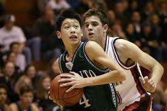

Jeremy was born on August 23, 1988, in Torrance, Los Angeles County, US, to Lin Gie-Ming and Shirley Lin. He grew up in the city of Palo Alto in the San Francisco Bay Area. He has an older brother, Josh, and a younger brother, Joseph.
His parents emigrated from Taiwan to the United States in the mid-1970s, settling in Virginia before moving to Indiana.Lin's paternal family are Hoklo people from Beidou, Changhua, Taiwan, while his maternal grandmother emigrated to Taiwan in the late 1940s from Pinghu, Zhejiang, in mainland China. Jeremy’s parents are devoted Christians, and he was raised in a religious environment.
His father taught him and his brothers to play basketball. Jeremy soon developed an interest in the game. His parents recognized his talents early. His mother also wished to guide him to balance his love for basketball with his studies. As a result, he excelled in both academics and basketball.
During his senior year in high school in 2005–2006, Lin captained Palo Alto High School to a 32–1 record and upset the nationally ranked team, Mater Dei, to win the California Interscholastic Federation (CIF) Division II state title. He was named first-team All-State and Northern California Division II Player of the Year.
 To look more appealing to universities, he sent DVDs of the highlights of his high-school basketball matches to all the universities that he had applied to, including Stanford University, the University of California, Berkeley, and the University of California, Los Angeles(UCLA). He wanted to obtain a sports scholarship, and his dream universities were Stanford University and UCLA.
Unfortunately, most of the universities that offered sports scholarships did not offer him any. Instead,they offered him normal admission without any guarantee of being named to the university teams. However, two Ivy League universities, Harvard and Brown, offered him guaranteed spots on their respective basketball teams.
He joined Harvard, and in his sophomore year, he was named to the All-Ivy League Second Team. In his junior year, he was the only NCAA Division I men’s basketball player with a top-10 rank in his region’s athletic conference. In his senior year, he was selected to be part of the All-Ivy League First Team. In 2010, he graduated from Harvard with a degree in economics and a grade-point average of 3.1. Despite his acheivements, he went undrafted in the 2010 NBA Draft.
Below is a video of Lin's highlights at Harvard: